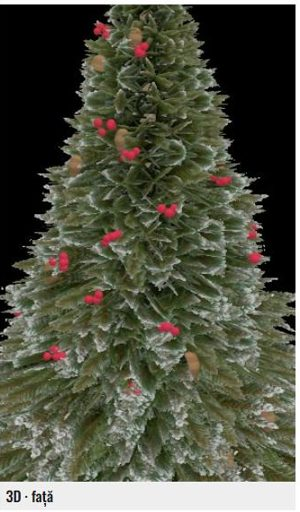

T1–T4 sunt o singură creangă pe o placă, la nivelul pieptului. Pentru fiecare: apasă, alege AR (sau rămâi pe „Obiect”), uită-te la creangă și închide. Ce ne interesează: se vede creanga verde cu ace, ca în poza mică? Sau apare doar albul / dreptunghi / nimic?
T1metoda actuală
T2transparență fără prag
T3pachet oficial ARKit, culori sRGB
T4rețeta din exemplele Apple

T5 · bradul întregbradul, împachetat cu utilitarul oficial ARKit (~7 MB, așteaptă 2–3 s)
Răspunsul ideal, ex.: „T1 doar alb, T2 ok, T3 ok, T4 ok, T5 ok”. O captură la T5 ajută mult.